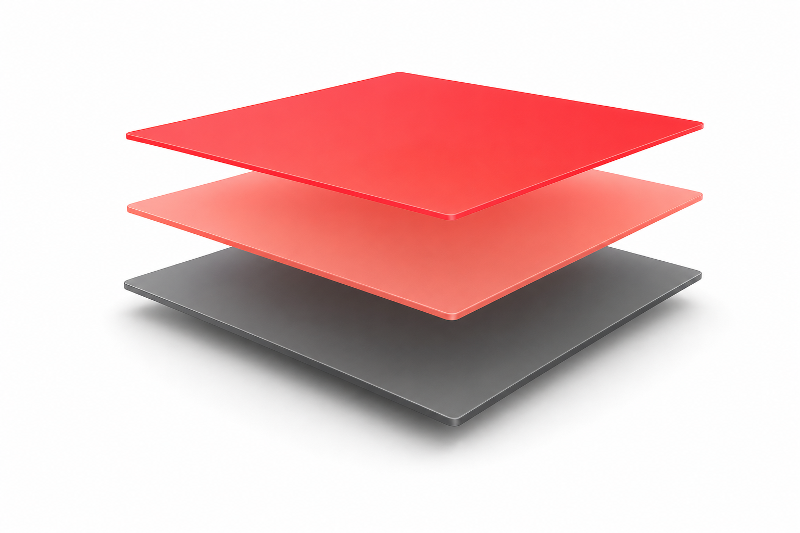

ทักษะที่ทำให้ “เก่ง” ขึ้น
สิ่งที่แยก vibe coding เล่นสนุก ออกจาก ใช้กับงานจริง
เร็ว… แต่พังเงียบ ๆ
วันนี้เราจะไปทางไหน
| # | หัวข้อ |
|---|---|
| 01 | ภาพรวม + 4 ทักษะ vibe coding |
| 02 | Context Engineering + Skills (โครงสร้าง context/plan · skill vs context) ← ใจกลาง |
| 03 | ตัวอย่างจริง: ระบบฐานข้อมูลพนักงาน |
| 04 | Vibe QA: กำกับ AI เขียน test |
| 05 | Multi-agent: ใช้ AI เป็นทีม (PO) |
| 06 | สำหรับหัวหน้าทีม vibe coding |
| 07 | นำไปใช้ · Git hygiene · เครื่องมือ + ติดตั้ง |
| 08 | Workshop — ลงมือสร้างจริง (CPMatch Care) |
ภาพรวม + 4 ทักษะ
vibe coding คืออะไร และทักษะอะไรบ้างที่เปลี่ยน “เล่นสนุก” ให้เป็น “งานจริง”
vibe coding คืออะไร — แล้วทำไมต้องฝึก
บอก AI ว่า “อยากได้อะไร” แล้วมันเขียนโค้ดให้ — เราขับด้วย intent ไม่ใช่พิมพ์เองทุกบรรทัด
เล่นสนุก = ทำได้ทันที
พิมพ์สั้น ๆ ก็ได้ของเลย เหมาะกับลองไอเดีย · prototype · งานเล็กที่พังก็ไม่เป็นไรงานจริง = ไม่ง่ายแบบนั้น
codebase ใหญ่ + ทำกันเป็นทีม + ต้องขึ้น production → ปล่อยตามใจ AI = พังแบบเงียบ ๆAI เขียนเร็วขึ้นหลายเท่า — แต่ถ้าคุมไม่เป็น มันก็สร้างบั๊ก / หนี้โค้ด / ช่องโหว่ ได้เร็วขึ้นหลายเท่าเหมือนกัน
4 ทักษะถัดไป คือสิ่งที่เปลี่ยน “เล่นสนุก” ให้กลายเป็น “ใช้กับงานจริงได้”
4 ทักษะที่แยก “เล่นสนุก” ออกจาก “งานจริง”
แต่ละทักษะแก้ปัญหาหนึ่งที่ AI มักทำพังเวลาเจองานจริง — ปัญหา → ทักษะที่แก้
Context engineering
CLAUDE.md) commit เข้า repoสั่งแบบ spec ไม่ใช่ vibe
วินัยการ review
รู้จัก 70% problem
เซฟตี้ · Git hygiene — commit เล็ก commit บ่อย เวลา AI หลุดโลกจะย้อนกลับได้ในก้าวเดียว ไม่ใช่ทั้งวัน
Context Engineering
ป้อนบริบทที่ใช่ให้ AI รู้จักโปรเจกต์ของคุณ — ทักษะที่ใช้เวลามากที่สุดวันนี้
บริบทดี = ผลลัพธ์ดี
agent รู้แค่สิ่งที่อยู่ใน context — บริบทห่วย = ผลห่วย ไม่เกี่ยวว่าโมเดลเก่งแค่ไหน
ถ้าไม่ให้บริบท → AI พลาด
- เดา convention ผิด — ตั้งชื่อ/วางไฟล์ไม่ตรงทีม
- สร้างไฟล์ผิด layer — วาง logic ผิดที่
- ละเมิดกฎที่มองไม่เห็น — commit เอง · แก้ migration เก่า
- reinvent — เขียน util / component ซ้ำของที่มี
ป้อนบริบทให้ดี → ทำไง
- rule file commit เข้า repo —
CLAUDE.md/AGENTS.mdทั้งทีมได้บริบทเดียวกัน - ชี้ไฟล์ให้ตรง —
@file/ ระบุ path อย่าให้เดา - “ใช่” ไม่ใช่ “เยอะ” — ไฟล์ไม่เกี่ยวเจือจางโมเดล
- ให้ตรวจงานเองได้ — บอกคำสั่ง test/lint ·
/clearเมื่อ session รก
ราก: model เก่ง generate แต่ไม่รู้จัก codebase คุณ — เห็นแค่ไฟล์ที่เปิดในรอบนั้น
Prompt engineering ต่างกับ Context engineering ยังไง
ทั้งคู่คือการ “บอกบริบท” ให้ AI — ต่างกันที่บอกครั้งเดียวจบ หรือบอกไว้ให้ใช้ซ้ำได้ตลอด
| Prompt engineering พิมพ์บอกในแชต | Context engineering เขียนเป็นไฟล์ในโปรเจกต์ | |
|---|---|---|
| เก็บไว้ที่ไหน | พิมพ์สดในแชต ครั้งต่อครั้ง | ไฟล์ในโปรเจกต์ที่ commit ลง repo |
| อยู่ได้นานแค่ไหน | หายไปเมื่อปิดแชต | อยู่ถาวร ใช้ซ้ำได้ทุก session |
| ใครได้ใช้ | เฉพาะคนที่พิมพ์ตอนนั้น | ทั้งทีม + AI ทุกตัว + คนที่มาทีหลัง |
| พอโปรเจกต์โตขึ้น | ต้องพิมพ์ย้ำเองซ้ำ ๆ | เขียนครั้งเดียว AI โหลดให้เอง |
พูดง่าย ๆ: context file = เอกสาร onboarding ของ AI — ถ้าต้องอธิบายเรื่องเดิมซ้ำทุก session แปลว่ามันควรย้ายไปอยู่ในไฟล์
README ≠ context file
README.md
ผู้อ่าน: มนุษย์ · ตอบ “ติดตั้ง/รันยังไง”
- prerequisites · install
- build / test
- license · contributing
- overview / marketing
CONTEXT.md
ผู้อ่าน: AI agent · ตอบ “ทำงานในโค้ดนี้ยังไงให้ถูก”
- architecture & layer rules
- naming convention เป๊ะ ๆ
- recipe เพิ่ม feature ใหม่
- gotchas / สิ่งที่จะเดาผิด
README ของ CLI boilerplate = ไร้ค่าต่อ AI — ความรู้จริงอยู่ใน CONTEXT.md
3 layers — แยกตามความถี่ที่เปลี่ยน

CONTEXT_<feature>.mdกำลังทำอะไร · เสร็จ/ค้างตรงไหน
เปลี่ยนทุกวัน
CONTEXT.mdcodebase ทำงานยังไง · recipe
เปลี่ยนตอน refactor
CLAUDE.md“อ่านอะไรก่อน” + กฎเหล็ก
เปลี่ยนนาน ๆ ครั้ง
บน (แดง) เปลี่ยนบ่อย → ล่าง (เทา) durable · แยกไฟล์ตามความถี่ → AI โหลดเฉพาะที่ใช้ ไม่ stale ทั้งก้อน
ไฟล์ entry — เขียนครั้งเดียว ทุก AI อ่านเจอ
ไฟล์ entry บาง ๆ (Layer บนสุด) ที่ชี้ไป CONTEXT.md + กฎเหล็ก · เขียน source เดียว แล้ว mirror ลงทุกชื่อตามเครื่องมือ
# CLAUDE.md <!-- mirror → AGENTS.md · อย่าแก้มือ -->
อ่านก่อน: @CONTEXT.md (สถาปัตยกรรม + recipe)
## Hard rules
- ห้าม git commit เอง · ถามก่อนแก้ schema
- ไม่ชัด → ถาม ห้ามเดา
## Commands
pnpm dev · pnpm test · pnpm lint| Tool | ไฟล์ที่อ่าน |
|---|---|
| Claude Code | CLAUDE.md |
| Cursor | .cursorrules |
| Windsurf | .windsurfrules |
| Copilot | .github/copilot-instructions.md |
| Gemini | GEMINI.md |
| Codex / generic | AGENTS.md |
เขียน source เดียว → mirror ทุกชื่อ · ถ้าเขียนแค่ CLAUDE.md เพื่อนที่ใช้ Cursor จะไม่ได้ context
โครงสร้างเอกสาร — Context & Plan
Workflow การพัฒนา — เขียน Plan → ตรวจ Plan → Implement
Skill คืออะไร — แล้วใช้ยังไง
skill = workflow สำเร็จรูปที่ห่อขั้นตอน + best practice ไว้ เรียกด้วย /command — แทนพิมพ์ prompt ยาว ๆ ซ้ำ ๆ
ใช้ยังไง — ง่ายมาก
- พิมพ์
/<ชื่อ>เช่น/review·/qa·/ship - skill ทำงานหลาย step ให้เอง — ไม่ต้องพิมพ์ prompt ยาว
- ส่ง argument เพิ่มได้ · คนยัง review + ตัดสินใจเสมอ
ทำไมดีกว่า prompt สด
- มาตรฐานเดียวทั้งทีม — ใครเรียกก็ได้ผลเหมือนกัน
- deterministic + version-controlled
- best practice ฝังอยู่ในตัว skill
ที่เห็นใน workshop นี้มาจาก gstack — ชุด skill สำเร็จรูป:/reviewหาบั๊ก ·/qaเทส browser จริง ·/shipเปิด PR ·/office-hoursเจาะไอเดีย (install gstack)
Skill ต่างกับ Context ยังไง
ทั้งคู่คือ context engineering — ต่างกันที่ ขอบเขต
Context
Skill
/commandจำง่าย ๆ: context = บริบทที่ ติดอยู่กับ repo เดียว · skill = ความสามารถที่ พกข้ามทุกโปรเจกต์ เช่น/review·/qa·/ship
บริหาร skill ให้ทั้งทีมได้ใช้
ติดตั้ง & ขอบเขต
- project skill (ใน repo) vs global (เครื่องตัวเอง)
- commit skill เข้า repo → ทั้งทีม + CI ใช้เหมือนกัน
- เปิด/ปิดเฉพาะที่ต้องใช้ได้
เขียน skill เอง
- ห่อ workflow ที่ทำซ้ำบ่อยเป็น skill (เช่น “สร้าง CRUD ตาม pattern”)
- ฝัง context/กฎทีมไว้ในตัว skill
- แชร์ผ่าน repo เหมือน context file
skill = context engineering ระดับ “ขั้นตอนการทำงาน” — เขียนครั้งเดียว ทีมใช้ซ้ำได้ตลอด ทุกโปรเจกต์
Skill ที่แนะนำให้ติดไว้
/gstack
ทีมวิศวกรเสมือน · workflow · ฟรี MIT
ชุด skill โอเพนซอร์สของ Garry Tan (CEO, YC) เปลี่ยน Claude Code เป็นทีม 23+ บทบาท — CEO / Eng / Designer / QA / Security / Release
- สปรินต์: Think → Plan → Build → Review → Test → Ship
- คำสั่งเด่น:
/office-hours /autoplan /review /qa /ship /cso /careful /freeze /guardกันคำสั่งอันตราย + commit ให้ทั้งทีม
เหมาะกับ อยากมี process + auto review/QA ทุก PR
/ux-ui-pro-max
design intelligence · ฟรี MIT
ฐานข้อมูลดีไซน์ให้ AI — 50+ styles · 161 palettes · 57 font pairings · 99 UX rules · 25 chart types ครอบ 10+ stack
- ขอ UI ปุ๊บ สร้าง design system + แนะนำ style/สี/ฟอนต์ ตามชนิดงาน
- ครอบ React / Next / Vue / Svelte / SwiftUI / Flutter / Tailwind / shadcn
- ใช้ตอนทำ landing · dashboard · SaaS · mobile หรือ review UI
เหมาะกับ ทำ UI สวยระดับโปร เลี่ยง “AI slop”
ตัวอย่างจริง
ระบบฐานข้อมูลพนักงาน — จาก context ไปสู่ spec · plan · review · จุดที่คนต้องคุมเอง
ตัวอย่าง: ระบบฐานข้อมูลพนักงาน
1 feature: “เพิ่มพนักงานใหม่” — ไล่ตั้งแต่ init จนเริ่ม implement
- Init → Context — ให้ AI ร่าง context file ตาม template เรา review
- Spec → Plan — เขียน user story + AC → สั่ง AI วางแผนก่อนเขียนโค้ด
- Implement → Review — ลงมือทีละ step · review ทุกก้อน · คุมงาน 30% สุดท้ายเอง
ไม่ต้องเขียน context เอง — ให้ AI ร่าง
ใช้ prompt ให้ AI ร่างโครง แล้วเรา review (AI scan/draft · human review)
① เปิดด้วย (framing)
“เริ่มโปรเจกต์ใหม่: ระบบฐานข้อมูลพนักงาน (web app + REST API + PostgreSQL) ยังไม่มีโค้ด ช่วยร่างCONTEXT.md แล้ว mirror เป็น CLAUDE.md/AGENTS.md — อย่าเพิ่งเขียนโค้ด feature ถ้าไม่ชัดให้ถามก่อน ห้ามเดา”
② กำหนดโครงสร้างที่ต้องมี
“ขอให้มีหัวข้อครบ: Hard rules บนสุด · Project+โดเมน · Stack(+version) · Commands · Structure(tree+layer) · Conventions(naming/error/response) · Database(schema/migration/no raw SQL) · API & Security(validation/auth/secret) · Testing — ใช้ตาราง+tree แทนพารากราฟ, term/ชื่อไฟล์เป็นอังกฤษ, กฎเจาะจง+ตรวจได้”→ AI ร่าง → review + แก้กฎให้ตรงทีม → commit + mirror ทุกชื่อไฟล์
CONTEXT.md ที่ AI ร่างออกมา
เรา review + แก้กฎให้ตรงทีม → commit เข้า repo
# CONTEXT.md — Employee DB
Stack: Next.js · API routes · PostgreSQL + Prisma · Zod
Run: pnpm dev Test: pnpm test DB: pnpm prisma migrate
## โครงสร้าง
app/employees/ หน้า list / create / edit
app/api/employees/ route handlers
lib/schema/ Zod schema (แชร์ client/server)
prisma/schema.prisma ตาราง + migration
## กฎ (hard rules)
- ทุก input ผ่าน Zod ก่อนแตะ DB
- ใช้ Prisma เท่านั้น — ห้าม raw SQL
- อีเมลซ้ำ → ตอบ 409 (ไม่หลุด stack trace)
- ห้ามแก้ migration ที่ apply แล้ว · ถามก่อนแก้ schema
## recipe เพิ่ม field ใหม่
1 แก้ prisma schema → migrate
2 อัปเดต Zod schema
3 แก้ API + UI ที่ใช้ schema ร่วม
4 เพิ่ม test ครอบ field ใหม่CLAUDE.md (Layer 1) = ไฟล์บาง ๆ ที่ชี้มาอ่าน CONTEXT.md นี้ + กฎเหล็ก แล้ว mirror เป็น AGENTS.md อัตโนมัติ
CLAUDE.md — ไฟล์ entry ที่ชี้มา CONTEXT.md
บาง ๆ · กฎเหล็ก + ชี้ว่าให้อ่านอะไรก่อน · mirror เป็น AGENTS.md อัตโนมัติ
# CLAUDE.md — Employee DB <!-- mirror → AGENTS.md · อย่าแก้มือ -->
## อ่านก่อนเริ่มงาน
1. @CONTEXT.md architecture · กฎ · recipe (ของจริงอยู่นี่)
2. @CONTEXT_<feature>.md งานที่กำลังทำ (ถ้ามี)
## Hard rules (ห้ามพลาด)
- ห้าม git commit / push เอง — ให้คนกด
- ห้ามแก้ migration ที่ apply แล้ว · ถามก่อนแก้ schema
- ห้ามเพิ่ม dependency ใหม่ · ไม่ชัด → ถามก่อน ห้ามเดา
## Commands
dev: pnpm dev · test: pnpm test · lint: pnpm lint
## Skills
/review ก่อนเปิด PR · /qa เทสต์ browser จริงใน case นี้: สั่งแบบ spec ไม่ใช่ vibe
คำสั่งกว้าง ๆ → AI ต้องเดาเอง · spec ที่ตรวจได้ → AI ทำตรง
นิสัย 2 ข้อใน step นี้: วางแผนก่อนเขียน — “เสนอแนวทางก่อน อย่าเพิ่งเขียนโค้ด” จับ ambiguity ตั้งแต่ยังถูก · แตกเป็นก้าวเล็ก — DB · validation · API · UI · tests แยก review ทีละก้อน
เขียน spec → ให้ AI วางแผนก่อน
Requirement
เพิ่มพนักงานใหม่ (HR ใช้)ฟิลด์: ชื่อ-สกุล · email(unique) · แผนก · ตำแหน่ง · วันเริ่มงาน · สถานะ
AC:
- กรอกครบ → บันทึกได้
- email ซ้ำ → error ไม่บันทึก
- สำเร็จ → กลับ list เห็นทันที
- ฟิลด์ว่าง → เตือนใต้ช่อง
- วันเริ่มงานอนาคต? ← ยังไม่ชัด
Plan ที่ AI ตอบกลับ
ถามก่อน (จับ ambiguity): กติกาวันเริ่มงาน · แผนก/ตำแหน่ง free-text หรือ dropdown · ใครมีสิทธิ์ (auth)
แผน (commit ทีละก้อน):
- Prisma model + migration
- Zod schema (แชร์ client/server)
- API POST + GET
- UI ฟอร์ม + list
- Tests (happy / ซ้ำ / invalid + e2e)
แผนเต็มที่ AI เสนอกลับมา
สั่ง “วางแผนก่อน อย่าเพิ่งเขียนโค้ด” → ได้แผนที่ review ได้ก่อนลงมือ
# PLAN — เพิ่มพนักงานใหม่
## ถามก่อน (ต้องเคลียร์)
- วันเริ่มงานเป็นอนาคต: อนุญาตไหม?
- แผนก/ตำแหน่ง: free-text หรือ dropdown?
- ใครมีสิทธิ์เพิ่มพนักงาน (auth)?
## ขั้นตอน (commit ทีละก้อน)
1 Prisma model Employee + migration
└ name · email@unique · deptId · position · startDate · status
2 Zod schema employeeCreate (แชร์ client/server)
3 API POST + GET /api/employees · email ซ้ำ → 409
4 UI ฟอร์ม (shadcn + zodResolver) + หน้า list
5 Tests: happy · email ซ้ำ · invalid · e2e
## เสร็จเมื่อ (Definition of Done)
test ผ่าน + เพิ่มพนักงานผ่าน UI ได้จริงแผนผ่าน review แล้ว → สั่งให้ลงมือ: “อ่าน @CONTEXT.md + แผนนี้ แล้วลงมือ step 1 (Prisma model + migration) ทีละก้อน · ทำตาม recipe ใน CONTEXT.md · หยุดให้ review ก่อนไป step ถัดไป · ห้าม commit เอง”
ลงมือทีละ step — review ทุกก้อน
| # | step | review focus |
|---|---|---|
| 1 | DB · Prisma model + migration | field/unique · ดู migration ก่อน apply |
| 2 | Validation · Zod schema แชร์ client/server | ครบ field · error message ไทย |
| 3 | API · POST/GET · อีเมลซ้ำ→409 · validate ก่อนแตะ DB | status code · ไม่หลุด stack trace |
| 4 | UI · ฟอร์ม shadcn + zodResolver (/ux-ui-pro-max) | ใช้ schema เดียวกับ API · redirect |
| 5 | Tests · api + e2e ตาม AC | test สะท้อน AC จริง · รันผ่าน |
ปิดงาน:/review(หาบั๊ก) ›/qa(เทสต์ browser จริง) ›/ship(เปิด PR) — ของ gstack
ระหว่าง implement: อยู่ใน loop เสมอ
โค้ดที่ merge เข้าไป คุณเป็นเจ้าของ — “AI เขียน” ไม่ใช่ข้ออ้างใน PR
- ✓ อ่าน diff ทุกก้อนตามแผน — DB · validation · API · UI · tests ต้องเข้าใจว่าทำไมเปลี่ยน
- ✓ ดู migration ก่อน apply — field/unique/index ถูกไหม และไม่แก้ migration ที่ apply แล้ว
- ▲ ระวัง failure mode คลาสสิก — API/แพ็กเกจที่ไม่มีจริง · logic ดูดีแต่ผิด · ช่องโหว่ security · secret หลุด
- ✓ verify อย่าเชื่อ — รันจริง รัน test เช็ค duplicate email / invalid field / permission
- ▲ architecture อยู่ในหัวคุณ — AI มองแค่ local ต้องสั่ง reuse schema/helper/pattern เดิม
ท้าย case: รู้ว่าเมื่อไหร่ต้องคุมเอง
ระบบพนักงานดูเหมือน CRUD ธรรมดา แต่ 30% สุดท้ายคือกฎข้อมูลส่วนบุคคล สิทธิ์ และ schema ที่พลาดแล้วเจ็บจริง
ปล่อยให้ AI เต็มที่
scaffold CRUD · ฟอร์ม · validation message · test boilerplate · refactor ตาม pattern · เพิ่ม state/loading/errorต้องลงมือคุมเอง
auth/role ของ HR · PDPA/ข้อมูลเงินเดือน · schema/migration · error semantics · approve ก่อน releaseAI ขยาย judgment ที่คุณมีอยู่แล้ว — มี = เร็วขึ้น / ไม่มี = พังเร็วขึ้น
Vibe QA — สั่ง AI เขียน test
เขียน test ให้ครอบโจทย์ ด้วยการ prompt ที่ดี + คิดแบบ QA
QA เปลี่ยนจาก “เขียน test” → “กำกับ AI เขียน test”
งานหลักของ QA ไม่ใช่พิมพ์ test เอง — แต่คือรู้ว่า “ต้องเทสอะไร” แล้วสั่ง AI + ตรวจว่ามันครอบจริง
ปล่อยให้ AI ทำ
- ร่าง test case จาก AC + spec
- เขียน boilerplate · API · scenario/e2e
- รันแล้ววนแก้จนผ่าน
QA ต้องคุมเอง
- ชี้ว่า “อะไรต้องเทส” — edge case · scenario · ทุก AC
- ตรวจว่า test ประกบ AC จริง ไม่ใช่ test ที่ไล่ตามโค้ด (pass เสมอ)
- จับ AI ที่ “แก้โค้ดให้ test ผ่าน” หรือ mock จนไม่ได้เทสอะไร
คุณค่าของ QA ยุค vibe = judgment ว่าครอบพอไหม ไม่ใช่ความเร็วในการพิมพ์ test
วงจร Vibe QA — สั่ง · ตรวจ · วน
ปล่อย AI ทำหนัก แต่คนคุมที่ “ขั้นตรวจ” (3) — ตัดสินว่าครอบ AC พอหรือยัง
ถ้า step 3 เจอ AC ที่ยังไม่มี test → วนกลับ step 2 · จุดที่คนต้องอยู่คือ “ตัดสินว่าครอบพอ” ไม่ใช่พิมพ์ test เอง
prompt เขียน test (ประกบ plan + ตามของเดิม)
# prompt เขียน test
เขียน test ให้ feature "เพิ่มพนักงาน"
อ้างอิง AC ใน @CONTEXT.md
ทำตาม pattern เดิมใน @tests/
(โครงสร้าง · การตั้งชื่อ · helper เหมือนของเดิม)
ครอบ 2 ระดับ:
- API: POST /employees → 201 / 409 / 400 / 403
- Scenario e2e: กรอกฟอร์ม → เห็นใน list → แก้ได้
ทุก AC ต้องมี test ประกบ + เคสพัง (ว่าง·ซ้ำ·สิทธิ์)
ใช้ framework เดิมในโปรเจกต์
ห้ามแก้ business logic เพื่อให้ test ผ่านอ้างอิงของเดิมเสมอ
ชี้@tests/ ให้ AI ลอก pattern/helper เดิม — อย่าให้มันตั้ง convention ใหม่เองครอบ 2 ระดับ
API + scenario (e2e) ตาม flow ผู้ใช้ ไม่ใช่แค่ endpoint เดี่ยวประกบ AC
ขอให้ list คู่ AC ↔ test ก่อน → review → ค่อยเขียน · ปิดด้วย/qaQA ควร prompt อะไรใส่ context file
เขียนกฎ test ลง CONTEXT.md ครั้งเดียว → ทุก session AI เขียน test สไตล์เดียวกัน ไม่ต้องสั่งซ้ำ
# prompt: เพิ่มส่วน Testing ใน CONTEXT.md
อ่าน @tests/ แล้วสรุปเป็นกฎลง CONTEXT.md:
- framework + ที่อยู่ test + วิธีรัน
- naming + โครงสร้าง (table-driven?)
- ระดับที่ต้องมี: API + scenario(e2e)
- กฎ: ทุก AC ต้องมี test ประกบ
- helper/fixture ที่ reuse ได้# ผลลัพธ์: ส่วน ## Testing ใน CONTEXT.md
- framework: vitest · อยู่ใน tests/
- รัน: pnpm test · e2e: pnpm test:e2e
- ทุก endpoint = table-driven + scenario
- ทุก AC ต้องมี test ประกบ (AC ↔ test)
- ใช้ helper ใน tests/_helpers.ts
- ห้ามแก้ logic เพื่อให้ test ผ่านQA ที่เก่งไม่ได้แค่เขียน test เก่ง — แต่ทำให้ “กฎการเทส” อยู่ใน context ที่ AI + ทั้งทีมใช้ร่วมกัน
Multi-agent — ทำงานเป็นทีม AI
ไม่ใช่แค่งาน dev — ใช้ AI หลายตัวแบ่งบทบาท ช่วยงาน PO / product ได้
ไม่ใช่แค่ dev — PO ก็ใช้ AI เป็น “ทีม” ได้
แทนที่จะถาม AI ตัวเดียวทำงาน PO ทั้งหมด → แบ่งเป็นทีม agent แต่ละตัวมีบทบาท แล้วคุณเป็นคนเคาะ
Research
สรุปปัญหา · ตลาด · คู่แข่ง · feedback ลูกค้าStory writer
แตก epic → user story + acceptance criteriaCritic / Risk
หา edge case · dependency · ความเสี่ยง (จงใจหาจุดพัง)Prioritization
จัดลำดับ RICE / MoSCoW · ชั่ง effort vs impactOrchestrator + คุณ (PO)
รวมผลทุก agent · ตัดสินใจ · เป็นคนเคาะสุดท้ายPattern: orchestrator → agents ทำงานขนาน → critic ค้าน/ตรวจ → human อนุมัติ
จาก idea → backlog ที่พร้อมใช้
ผูกกับทักษะใน workshop
Context: ทุก agent อ่าน product context เดียวกัน · Spec: ให้ agent ถาม ambiguity ก่อนร่าง · Review: critic ค้านก่อน คน PO เคาะทีหลังคน PO ไม่ได้หายไป — เปลี่ยนจาก “เขียนเองทุกอย่าง” เป็น “คุมทีม AI + ตัดสินใจ”
ตัวอย่าง PRODUCT_CONTEXT.md
ไฟล์เดียวที่ agent ทุกตัวอ่านร่วมกัน — เข้าใจ product ตรงกันก่อนเริ่ม
# PRODUCT_CONTEXT.md — People Hub (ระบบ HR)
## Vision
ให้ HR จัดการข้อมูลพนักงานครบใน 1 ที่ ลดงานเอกสารซ้ำ
## Personas
- HR Officer — เพิ่ม/แก้พนักงาน · ออกรายงาน
- Manager — ดูทีมตัวเอง · อนุมัติวันลา
- Employee — ดู/แก้ข้อมูลตัวเอง
## Constraints
- PDPA: ข้อมูลส่วนบุคคลห้ามหลุด / ห้าม log
- UI ภาษาไทย · เงินเดือนเห็นเฉพาะ HR
## Success metric
- เพิ่มพนักงานใหม่ < 2 นาที · ลด ticket แก้ข้อมูล 50%
## Out of scope (ตอนนี้)
- payroll คำนวณภาษี · mobile appprompt ที่สั่งทีม agent
# orchestration prompt
ทำตัวเป็นทีม PO 4 บทบาท ทำงานต่อกัน
อ่าน PRODUCT_CONTEXT.md ก่อนเสมอ:
1) RESEARCHER
สรุปปัญหา + คู่แข่ง 3 ราย
2) PM
เขียน epic → user story + AC
3) RISK
หา edge case + คำถามที่ยังไม่ตอบ
4) PRIORITIZER
จัดลำดับด้วย RICE
กฎ: ข้อมูลไม่พอให้ “ถามก่อน” ห้ามเดา
จบแล้วสรุปเป็นตารางให้ PO เคาะ3 อย่างที่ทำให้ prompt เวิร์ก
1. ชี้ให้อ่าน context file ก่อน2. บังคับให้ “ถาม” เมื่อไม่ชัด (จับ ambiguity)
3. ขอ output รูปแบบที่ตรวจง่าย (ตาราง)
เริ่มเล็ก
1 prompt หลายบทบาทก่อน → ค่อยแยกเป็นหลาย agent จริงเมื่อจำเป็นหน้าจอตอน agent คุยกัน
เห็น “ทาง” ของแต่ละ agent → ตรวจได้ว่าใครคิดอะไร และเข้าไปแก้จุดที่ผิดได้ตรงจุด
เครื่องมือที่ช่วยได้
product context file
PRODUCT_CONTEXT.md — vision · persona · constraint · glossary ให้ทุก agent อ่านร่วม แล้ว commit ไว้ใน repogstack = multi-agent สำเร็จรูป
/office-hours เจาะไอเดีย · /plan-ceo-review กลยุทธ์/scope · /autoplan review หลาย roleไม่ต้องสร้างเองทั้งหมด — gstack มีทีม agent ให้ใช้เลย (ดูสไลด์ Skills แนะนำ ในส่วน Context + Plan)
นำทีม vibe coding ยังไงให้รอด
เครื่องมือแรงขึ้น = ทีมไปได้เร็วขึ้น หรือพังเร็วขึ้น — อยู่ที่คนนำวางระบบ
7 ข้อที่หัวหน้าทีมต้องวางให้ทีม
ตั้งมาตรฐานกลาง
context file ระดับทีม commit ให้ทุกคน + AI baseline เดียว
review เป็นกติกา
โค้ด AI = PR คน · ห้าม merge ที่ไม่มีใครเข้าใจ
แบ่งงานตาม 70%
AI งานซ้ำ/boilerplate · คนคุม security · arch · hot path
Definition of Done
รันจริง + test ผ่าน ไม่ใช่แค่ “compile ได้”
วาง guardrails
permission · แยก branch · ห้าม agent แตะ secret / prod
วัดที่ outcome
feature + คุณภาพ ไม่ใช่จำนวนบรรทัด/วัน
สั่งให้ reuse
หา component/util เดิมก่อนเขียนใหม่ · refactor รวมโค้ดซ้ำ
ระวัง
junior พึ่ง AI จนไม่เข้าใจโค้ด = ทีมโตช้า — ให้เข้าใจ + แชร์ recipe
นำไปใช้ + ปิดท้าย
งานที่เอาไปใช้ได้เลย · Git hygiene · เครื่องมือแนะนำ · ติดตั้ง
งานที่เอาไปใช้ได้เลย
- เริ่มงานใน codebase ที่ไม่คุ้น
“อธิบาย flow การ auth ไล่จากไฟล์ไหนบ้าง” - เขียน test ให้โค้ดที่ยังไม่มี
“เขียน table-driven test ครอบ edge case” - Refactor กว้าง ๆ
“แยก logic นี้เป็น service ตาม pattern ใน X”
- Debug จาก error / log
“นี่ stack trace — หาสาเหตุ + เสนอ fix” - Boilerplate / งานซ้ำ ๆ
“สร้าง CRUD endpoint ตามแบบที่มีอยู่” - แปลง / พอร์ตโค้ด
“แปลงสคริปต์ bash นี้เป็น Go”
Git hygiene = กล้าเร็วได้
ตาข่ายนิรภัยที่ทำให้กล้าปล่อยให้ AI ลองได้ โดยย้อนกลับได้เสมอ
- commit เล็ก · commit บ่อย — rollback ง่ายเวลา AI หลุดโลก ย้อนแค่ก้าวเดียว ไม่ใช่ทั้งวัน
- git diff คือพื้นที่ review — ทุก change ผ่านสายตาคุณก่อน merge เสมอ
- อย่าปล่อย change ค้างกองพะเนิน — ของที่ยังไม่ commit เยอะ ๆ = ย้อนกลับไม่สะอาด แยกของดี/เสียไม่ออก
ติดตั้งแล้วเริ่มใช้ได้เลย
/gstack
github.com/garrytan/gstack
install gstack
รันใน Claude Code หลังวางลิงก์ repo / เปิดหน้า repo
ต้องมี Claude Code + Bun · ฟรี MIT
/ux-ui-pro-max
ui-ux-pro-max-skill.nextlevelbuilder.io
npm i -g uipro-cli → uipro init --ai claude
Claude Code / Cursor / Windsurf · ฟรี MIT
Workshop — สร้างของจริง
โปรเจกต์จริง: CPMatch Care — แอพดูแลพนักงานในองค์กร · วาง context + plan ทีละ feature ด้วย 4 ทักษะ
โจทย์จริง: CPMatch Care — แอพดูแลพนักงาน
แอพภายในองค์กร · ผู้ใช้: พนักงาน / หัวหน้า / admin · workshop นี้วาง context + plan ทีละ feature (ยังไม่ลงโค้ด)
Core HR
- ทะเบียนพนักงานทั้งองค์กร
- ขาด · ลา · มาสาย
- จัดคนเข้า project (admin)
Engagement + Wellbeing
- ระบบแต้มเมื่อทำกิจกรรมสำเร็จ
- กล่องระบายความรู้สึก ไม่ระบุตัวตน
- AI สรุปให้หัวหน้าอ่าน
Platform
- RBAC หลายระดับ · ตั้งสิทธิ์อิสระ
- หน้า admin จัดการระบบ
- Web + Mobile + API แยก service
กติกา: plan ก่อนทุก feature · สรุป stack + architecture ก่อนลงมือ · test cov > 80% · โทนสีตาม design CPMatch Care
ก่อนเริ่ม: เช็กให้พร้อม
ทำให้ครบก่อน แล้วทั้ง session จะลื่น ไม่ติดเรื่อง setup กลางทาง
- 1 Claude Code เปิดได้ + login แล้ว
- 2 git — repo หลัก + submodule
/api/web/app - 3 โฟลเดอร์
/plansสำหรับ plan ทุก feature
- 4 skills:
/gstack·/ux-ui-pro-max·/impeccable— ตรวจ + install ก่อนเริ่ม - 5 editor เปิด root ไว้ (เห็น context.md / claude.md)
- 6 ไฟล์ design โทนสี CPMatch Care ไว้อ้างอิง
โครงสร้าง: root เก็บcontext.md+claude.md· service แยก submodule/api/web/app· plan เป็น/plans/001-<feature>.md(ref context.md เสมอ)
กฎ UI (hard rule ใน context): ทุกการสร้าง/แก้ UI ทั้ง web + app ต้องผ่าน skill design/ux-ui-pro-max+/impeccableเสมอ — ห้ามออกแบบเอง
ตั้งระบบให้ดี ก่อนลงโค้ด
- 1 Context — ให้ AI ร่าง
context.md(architecture) +claude.md/agent.md(Layer 1, ห้าม commit เอง) ตามโครง Layer 1-3 - 2 Roles —
role.mdทีมที่ปรึกษา: uxui 1 · dev lead 1 · po 2 · end-user 1 — เรียกใช้ตอนคิด feature ใหม่ - 3 Plan/feature — เลือก feature → สรุป tech stack + architecture →
/plans/001-*.md(สถานะ todo→done) ก่อนลงโค้ด - Plan review (hard rule) — ทุก plan ถามก่อนใช้
/plan-eng-review·/plan-devex-review·/plan-ceo-reviewและทุก plan ที่มี UI รัน/plan-design-reviewเสมอ
prompt บอกชัด: “ยังไม่ต้อง implement ให้แพลนให้เสร็จและทำทีละ feature” — workshop วันนี้จบที่ plan ที่ review ได้
prompt ประจำแต่ละก้าว
① Context — kickoff (ตัวเต็มใน Resources)
“สร้างโปรเจกต์ใหม่ CPMatch Care: แอพพนักงานในองค์กร (Web Next.js · App Flutter · API Go · DB Postgres) — ภาพรวมฟีเจอร์ + โครง context Layer 1-3 + skills ที่ต้องมี · ยังไม่ต้อง implement เขียนcontext.md ให้เสร็จก่อน ไม่ชัดให้ถาม ห้ามเดา” → prompt เต็มในคลัง Resources
② Roles — ทีมที่ปรึกษา
“สร้างrole.md จำลอง persona: uxui 1 · dev lead 1 · po 2 · end-user 1 — ทุกครั้งที่ขึ้น plan feature ใหม่ ให้ถามก่อนว่าจะเรียกทีมนี้ปรึกษาไหม”
③ Plan/feature — สรุป stack + arch ก่อน
“เลือก feature ‘ขาด/ลา/มาสาย’: สรุป tech stack + architecture design ของแต่ละ service ให้ครบก่อน แล้วเขียน/plans/001-*.md (ref context.md · มีสถานะ todo→done) — ยังไม่ลงโค้ด”
④ Implement → ปิดงาน (ทำต่อทีละ feature)
“ลงมือตาม plan ทีละก้าว หยุดให้ review ก่อนไปต่อ · test cov > 80% (API unit + Playwright)” · จบ feature:/review → /qa → /ship
“เสร็จ” ของ workshop วันนี้
Definition of Done
- ✓
context.md(Layer 2) +claude.md/agent.md(Layer 1) ครบ - ✓
role.mdทีมที่ปรึกษาพร้อมใช้ - ✓ ≥ 1 plan ใน
/plans/001-*.md(มีสถานะ · ref context) - ✓ สรุป tech stack + architecture ครบทุก service
- ✓ ระบุกฎ test (cov > 80%) ใน context แล้ว
กับดักที่เจอบ่อย
- ▲ รีบ implement ก่อนวาง context → กลับมาแก้ยับ
- ▲ สั่ง mega-prompt ทีเดียว → ทำทีละ feature
- ▲ ปล่อย AI commit เอง → กฎ Layer 1: ห้าม commit ถ้าไม่สั่ง
- ▲ plan ไม่มีสถานะ → ใส่ todo→done ทุก feature
มี context + plan ที่ review แล้ว → ลง implement ทีละ feature ด้วย pipeline เดิม (Implement → Review → /qa → /ship) ได้เลย
เปลี่ยน vibe → ใช้งานจริง
| ทักษะ | ✓ ทำ | ✗ เลี่ยง |
|---|---|---|
| Context engineering | ป้อนบริบทที่ใช่ + commit rule file | ไม่มี rule file ปล่อย AI เดาเอง |
| Spec ไม่ใช่ vibe | สั่งชัด + วางแผนก่อน + ก้าวเล็ก | mega-prompt สั่งทีเดียวใหญ่ |
| วินัยการ review | อ่าน diff ทุกบรรทัด เป็นเจ้าของโค้ด | รับโค้ดที่ไม่เข้าใจ · เชื่อ “รันผ่าน=ถูก” · API ที่ AI มั่ว |
| 70% problem | ปล่อย AI ที่ง่าย คุมเองที่สำคัญ | ปล่อย agent แตะ secret / คำสั่งอันตราย |
+ Git hygiene เป็นตาข่ายนิรภัยตลอดทั้ง 4 ทักษะCPMatch · vibe coding workshop
ขอบคุณครับ
Thank you — ลองเอา vibe coding ไปใช้กับงานจริงดูนะครับ
คำถาม / คุยต่อได้เลย · vibe coding workshop · CPMatch